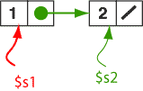

8 bytes (4 bytes for the integer, 4 bytes for the address)
# # create the first node li $v0,9 # allocate memory li $a0,8 # 8 bytes syscall # $v0 <-- address move $s1,$v0 # $s1 = &(first node) li $t0,1 # store 1 sw $t0,0($s1) # at displacement 0 # & == "address of" # create the second node li $v0,9 # allocate memory li $a0,8 # 8 bytes syscall # $v0 <-- address move $s2,$v0 # $s2 = &(second node)  # & == "address of" # link the second node to the first sw ,4() # copy address of second node # into the first node # initialize the second node li $t0,2 # store 2 sw $t0,0($s2) # at displacement 0 # put null in the link of the second node sw ,4()
Dynamic memory can be used for a node. Here is a program that creates a two-node linked list.
First, 8 bytes are dynamically allocated for the first node.
The address of the node is saved in $s1.
The data, "1", is copied into the first four bytes of the
node at displacement 0 off of $s1.
The process is repeated for the second node, except that
its address is saved in $s2.
To complete the structure, the first node is made to point to the second node. This is what the green arrow between the nodes shows. Also, a null should be put in the pointer field of the last node. But the code is not complete.
Fill in the blanks.